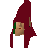
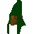
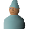
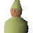
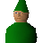
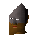
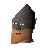
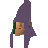
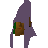

Grand Tree
Location at 2469, 3504 · Kingdom of Kandarin
Open on the world map → Open in knowledge graph → Below: Grand Tree (underground)
NPCs
| NPC | Level | Spawns | Notable drops |
|---|---|---|---|
| 23 | 24 | ||
 Gnome guard | 23 | 16 | |
| Aluft Gianne | 1 | 1 | |
| 1 | 7 | ||
| 1 | 12 | ||
 Gnome | 1 | 6 | |
| 1 | 2 | ||
 Gnome child | 1 | 1 | |
 Gnome child | 1 | 1 | |
 Gnome child | 1 | 1 | |
 Gnome troop | 1 | 1 | |
 Gnome troop | 1 | 1 | |
 Gnome woman | 1 | 11 | |
 Gnome woman | 1 | 7 | |
| shop | 2 | ||
| 1 | |||
| Butterfly | 1 | ||
| Butterfly | 1 | ||
| 2 | |||
| Gnome pilot | 1 | ||
| shop | 1 | ||
| shop | 1 | ||
| shop | 1 | ||
| 1 | |||
| shop | 1 |